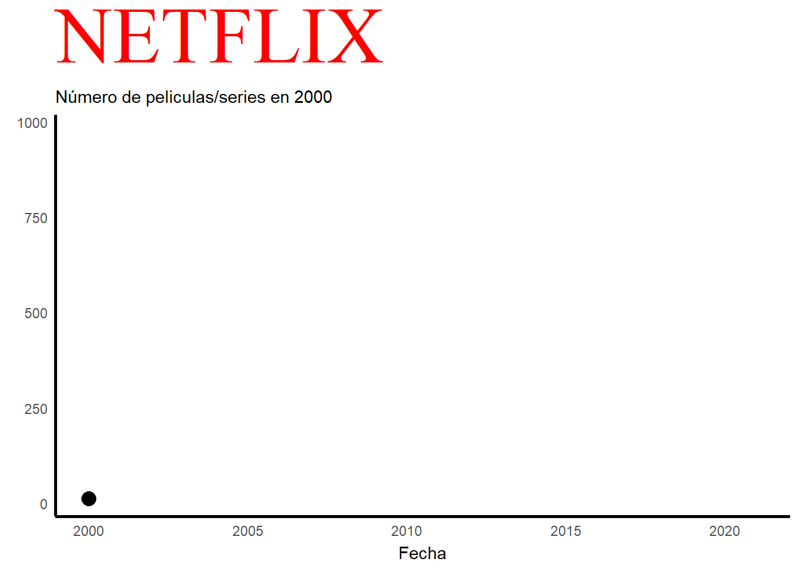
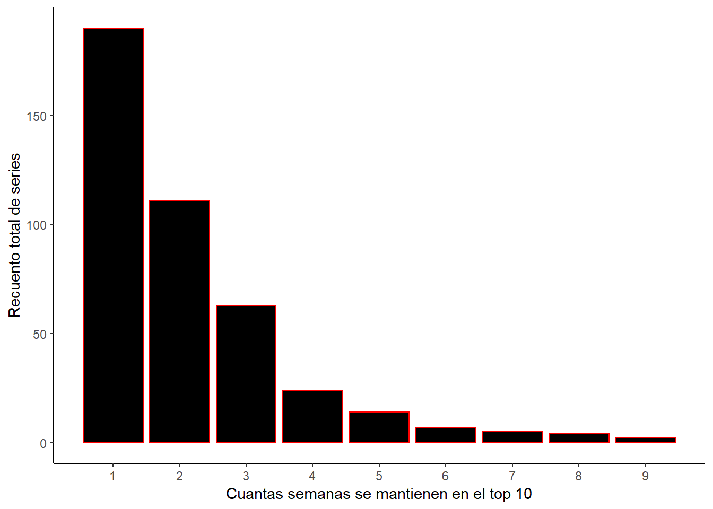
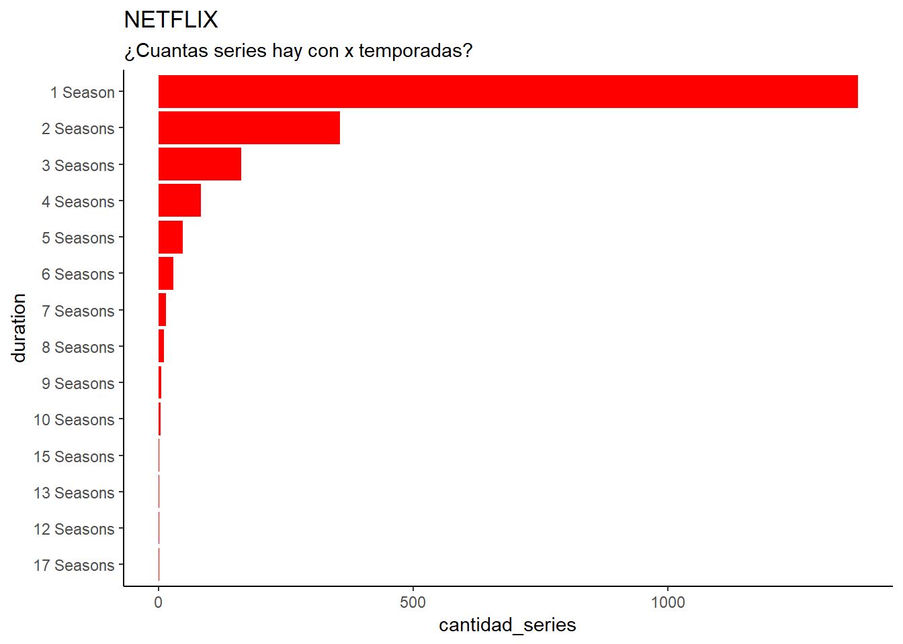
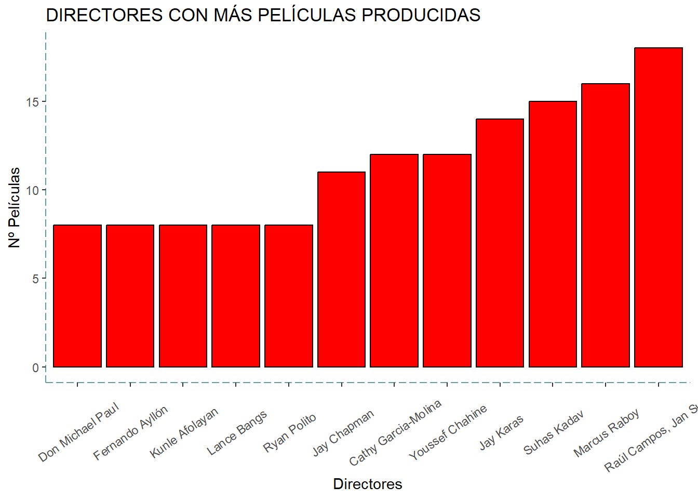
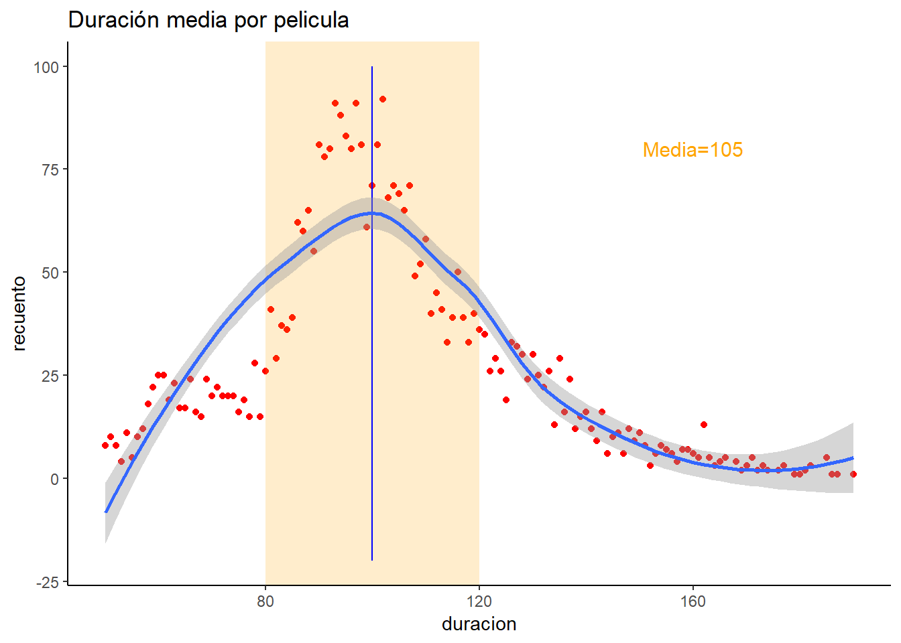

Análisis de datos de las diferentes plataformas online
Amazon
Netflix
Autores/as
Carlos García (garpon@alumni.uv.es)
Vera Monteagudo (vemonse@alumni.uv.es)
Zayad Youssof (zayous@alumni.uv.es)
Fecha de publicación
22 de diciembre de 2022
Introducción
En este trabajo vamos a analizar diferentes datos de la plataforma de Netflix. Primero analizaremos cuantas películas y series han sido incorporadas a dicha plataforma y con dichos gráficos también podemos explicar lo que hay detrás con estos gráficos. Seguidamente hablaremos acerca de cuáles son los países de producción. Posteriormente nos centraremos en los géneros y las series.
Los datos que hemos utilizado para este trabajo provienen de la página Kaggle. Esta pagina es una comunidad online de profesionales y científicos de datos. Pagina recomendable para buscar datos acerca de temas relacionador con R. Por si la queréis usar para el trabajo individual, pincha aquí Bibliografía: Kaggle y web de la asignatura.
En este grafico podemos observar el número de películas/series que se han ido añadiendo a lo largo de los años, en concreto del año 2000 al 2021. Con este grafico también se puede explicar la historia de esta plataforma a lo largo de los años. En el año 2000, mientras que el alquiler de DVD era su único servicio, Netflix introdujo un sistema de recomendación personalizado basado en 1 a 5 estrellas que los clientes otorgaban al material que alquilaban en su sitio. Se cree que el éxito de la empresa se debe a la mejora continua de este sistema, que cambiará a un sistema de me pulgar arriba/abajo(para indicar si te gusta o no) en 2017, y al uso de otros datos (conocidos como minería de datos) que la plataforma ha obtenido de sus clientes. En 2007, Netflix lanzó su servicio de video a pedido en EE. UU., disponible solo a través de PC; a partir de 2008 se añadieron diversas opciones para acceder al catálogo vía streaming: videoconsolas, Smart TV, tablets, etc.El 25 de febrero de 2007, se envió su DVD número mil millones. Para el año 2009, su catálogo físico ofrecía 100.000 títulos y su base de clientes superaba los 10 millones de suscriptores. En 2011, la empresa se expandió por primera vez fuera de EE. UU. y Canadá, ofreciendo su catálogo vía streaming en América Latina y el Caribe. En 2012 ofreció sus servicios en algunos países europeos y en 2016 proporcionó contenido a todo el mundo, excepto a la región de Crimea, Corea del Norte, China, Irán, Irak y Siria. Como se puede observar en el grafico sobre 2012 empieza a crecer exponencialmente y a ser más conocido internacionalmente. También hay que añadir que en 2020 hay una caída de manera brusca en cuanto al número de películas y series. Esto se debe al COVID-19 y al confinamiento, lo que hacía muy difícil rodar.

Películas vs Series
Después de explicar un poco la historia de Netflix y analizar sus altibajos en el anterior gráfico, en este separamos en un mismo grafico el número de películas y el número de series, que como podemos ver el rojo representa TV shows y el azul representa a las películas. Donde se puede observar que predomina la producción de películas. A lo largo de los años esta diferencia se ha ido incrementando hasta 2020, debido al COVID-19, ya que tuvieron que dejar de filmar en pleno rodaje o incluso se llegaron a atrasar.
País lider en producción
Centrándonos en las películas, en el siguiente grafico podemos distinguir cuantas películas se han producido o rodado en cada país. Hay que tener dos cosas en cuenta en este grafico: La primera es que cuanto más cálido es el cuadrado del país mas películas han sido rodadas en dicho país, si pinchamos encima del cuadrado se puede ver cuantas películas hay por país. La segunda es que la variable de los países la hemos tenido que separar en dos columnas debido a que había filas donde ponían más de un país(por ejemplo: España, Alemania) y no los reconocía como dos países sino que lo consideraba como NA(no existía) ya que no hay un país que se llame España, Alemania.
Semanas en el TOP 10
Centrándonos ahora un poco más en las series, vamos a analizar cuantas series se han mantenido en el ranking semanal del top 10 en Netflix. Como se puede observar hay una tendencia descendente donde hay muchas series que se mantienen una semana o un par de semanas pero a medida que van aumentando las semanas cada vez hay menos, donde al final dichas series que se mantienen son las mejores o las que más enganchan al público.

Las series y sus temporadas
El próximo grafico y tabla representan el total de series agrupadas por el número de temporadas que tienen. Como se puede interpretar en el gráfico, se da una tendencia descendente a medida que aumentan el número de temporadas, esto se debe a que la gente piensa que a partir de las 4-5 temporadas de una serie o incluso tres, una próxima temporada sería hacerla muy larga o densa.

Géneros
Centrándonos ahora en la temática de las películas, podemos ver cuáles son los géneros más producidos, donde el primero en el ranking es Dramas(1019), seguido de Comedias(819).
Géneros por año
Si ahora ya hemos visto cuales son los géneros más producidos, ahora vamos a ver en qué año se produjeron más películas de dichos géneros. El anterior grafico era en total, en este lo hemos dividido por años, donde cada año representa un color, como podemos ver sigue predominando el drama.
Otro datos curiosos
Directores con más películas
Estos son los directores con más películas producidas en esta plataforma. Hay que añadir que estos datos no son globales sino de Netflix, es decir, los datos son solo de películas que están en esta plataforma. Esto quiere decir que el primero que esta en este ranking no significa que este el primero en el ranking mundial.

Duración películas
Hemos buscado información sobre las películas de Netflix y sobre cual es su media de duración, la media suele estar sobre 105 minutos aproximadamente. Nosotros con los datos que teníamos sobre Netflix obtenidos en Kaggle, hemos realizado un gráfico de dispersión para ver si es cierto que la media se acerca a los 105 minutos, para lograrlo hemos realizado un grafico de dispersión donde cada punto representa cuantas películas hay que duren un determinado número de minutos, por ejemplo, cuantas películas hay que duren 80 minutos. En el grafico nos ha salido una campana de Gauss(distribución normal) y como podemos ver si que puede darse que la media sea de 105 minutos.

Conclusiones
Netflix es una plataforma muy grande donde abarca muchos géneros de películas y series muy diversas, con directores de todo tipo. Cabe añadir que últimamente están apareciendo bastantes plataformas en el mercado
Con esto acabo mi trabajo para BigData!!
FIN
Ejecutar el código
---title: "Estudio de las plataformas audiovisuales"description: | Análisis de datos de las diferentes plataformas online author:- name: Carlos García (garpon@alumni.uv.es) #--- name: Vera Monteagudo (vemonse@alumni.uv.es) #--- name: Zayad Youssof (zayous@alumni.uv.es) #--date: 2022-12-22 #--categories: [Amazon, Netflix] #--image: "./imagenes/imagen_01.png"title-block-banner: true #- {true, false, "green","#AA0000"}title-block-banner-color: "red" #-"#FFFFFF" toc: truetoc-location: lefttoc-depth: 3smooth-scroll: trueformat: html: #backgroundcolor: "#F1F3F4" #embed-resources: true link-external-newwindow: true #css: ./assets/my_css_file.css #- CUIDADO!!!!code-tools: truecode-link: true---# Introducción En este trabajo vamos a analizar diferentes datos de la plataforma de Netflix. Primeroanalizaremos cuantas películas y series han sido incorporadas a dicha plataforma y con dichosgráficos también podemos explicar lo que hay detrás con estos gráficos. Seguidamentehablaremos acerca de cuáles son los países de producción. Posteriormente nos centraremosen los géneros y las series.---# Datos del trabajo::: {.panel-tabset}## Datos usadosLos datos que hemos utilizado para este trabajo provienen de la página Kaggle. Esta pagina esuna comunidad online de profesionales y científicos de datos. Pagina recomendable parabuscar datos acerca de temas relacionador con R. Por si la queréis usar para el trabajoindividual, pincha [aquí](https://www.kaggle.com/)Bibliografía: Kaggle y web de la asignatura.## Código```{r echo = TRUE}library(rio)library(tidyverse)library(forcats)library (ggthemes)library(ggThemeAssist)library(janitor)library(dplyr)library(plotly)library(gganimate)library(ggThemeAssist)library(rnaturalearth)library(rnaturalearthdata)library(gapminder)library(viridis)library(highcharter)library(treemapify)library(treemap)fs::dir_create("datos")plataformas_1 <- rio::import("./datos/movies.csv")netflix_1 <- rio::import("./datos/netflix.csv")all_1 <- rio::import("./datos/all_weeks.csv")amazon_1 <- rio::import("./datos/amazon_prime_titles.csv")#dataframes arreglados para cogerlos como basenetflix <-janitor::clean_names(netflix_1)plataformas <- janitor::clean_names(plataformas_1)all <- janitor::clean_names(all_1)amazon <- janitor::clean_names(amazon_1)```:::---# Análisis de datos## PelículasEn este grafico podemos observar el número de películas/series que se han ido añadiendo a lo largo de los años, en concreto del año 2000 al 2021. Con este grafico también se puede explicar la historia de esta plataforma a lo largo de los años. En el año 2000, mientras que el alquiler de DVD era su único servicio, Netflix introdujo un sistema de recomendación personalizado basado en 1 a 5 estrellas que los clientes otorgaban al material que alquilaban en su sitio.Se cree que el éxito de la empresa se debe a la mejora continua de este sistema, que cambiará a un sistema de me pulgar arriba/abajo(para indicar si te gusta o no) en 2017, y al uso de otros datos (conocidos como minería de datos) que la plataforma ha obtenido de sus clientes.En 2007, Netflix lanzó su servicio de video a pedido en EE. UU., disponible solo a través de PC; a partir de 2008 se añadieron diversas opciones para acceder al catálogo vía streaming: videoconsolas, Smart TV, tablets, etc.El 25 de febrero de 2007, se envió su DVD número mil millones. Para el año 2009, su catálogo físico ofrecía 100.000 títulos y su base de clientes superaba los 10 millones de suscriptores. En 2011, la empresa se expandió por primera vez fuera de EE. UU. y Canadá, ofreciendo su catálogo vía streaming en América Latina y el Caribe. En 2012 ofreció sus servicios en algunos países europeos y en 2016 proporcionó contenido a todo el mundo, excepto a la región de Crimea, Corea del Norte, China, Irán, Irak y Siria. Como se puede observar en el grafico sobre 2012 empieza a crecer exponencialmente y a ser más conocido internacionalmente.También hay que añadir que en 2020 hay una caída de manera brusca en cuanto al número de películas y series. Esto se debe al COVID-19 y al confinamiento, lo que hacía muy difícil rodar. ```{r}#| echo: falselibrary(rio)library(tidyverse)library(forcats)library (ggthemes)library(ggThemeAssist)library(janitor)library(dplyr)library(plotly)library(gganimate)library(ggThemeAssist)library(rnaturalearth)library(rnaturalearthdata)library(gapminder)library(viridis)library(highcharter)library(treemapify)library(treemap)fs::dir_create("datos")plataformas_1 <- rio::import("./datos/movies.csv")netflix_1 <- rio::import("./datos/netflix.csv")all_1 <- rio::import("./datos/all_weeks.csv")amazon_1 <- rio::import("./datos/amazon_prime_titles.csv")#dataframes arreglados para cogerlos como basenetflix <-janitor::clean_names(netflix_1)plataformas <- janitor::clean_names(plataformas_1)all <- janitor::clean_names(all_1)amazon <- janitor::clean_names(amazon_1)#Gráfico 1#tabla del gráficotabla_1 <- netflix %>%rename(year = release_date) %>%select(title,year) %>%group_by(year) %>%filter(!is.na(year),year>=2000) %>%summarise(recuento =n()) %>%arrange(desc(recuento))#Código del gráficop1 <- tabla_1 %>%ggplot(aes(x = year, y = recuento ))+geom_line(size=2, color="red")+geom_point(size=4)+labs(title="NETFLIX",subtitle="Número de peliculas/series en {frame_along}",x="Fecha",y="")+theme_minimal()+transition_reveal(year)+theme(plot.title=element_text(color="red",size=50,hjust = ,5))p1 +theme(panel.grid.major =element_line(colour =NA),panel.grid.minor =element_line(colour =NA), axis.line =element_line (linewidth =1, colour ="black"),plot.title =element_text(family ="serif")) +labs(y =NULL)```## Películas vs SeriesDespués de explicar un poco la historia de Netflix y analizar sus altibajos en el anterior gráfico, en este separamos en un mismo grafico el número de películas y el número de series, que como podemos ver el rojo representa TV shows y el azul representa a las películas. Donde se puede observar que predomina la producción de películas. A lo largo de los años esta diferencia se ha ido incrementando hasta 2020, debido al COVID-19, ya que tuvieron que dejar de filmar en pleno rodaje o incluso se llegaron a atrasar.```{r}#| echo: falselibrary(rio)library(tidyverse)library(forcats)library (ggthemes)library(ggThemeAssist)library(janitor)library(dplyr)library(plotly)library(gganimate)library(ggThemeAssist)library(rnaturalearth)library(rnaturalearthdata)library(gapminder)library(viridis)library(highcharter)library(treemapify)library(treemap)fs::dir_create("datos")plataformas_1 <- rio::import("./datos/movies.csv")netflix_1 <- rio::import("./datos/netflix.csv")all_1 <- rio::import("./datos/all_weeks.csv")amazon_1 <- rio::import("./datos/amazon_prime_titles.csv")#dataframes arreglados para cogerlos como basenetflix <-janitor::clean_names(netflix_1)plataformas <- janitor::clean_names(plataformas_1)all <- janitor::clean_names(all_1)amazon <- janitor::clean_names(amazon_1)#Gráfico 6#Hacer tablastabla_6 <- netflix %>%filter(release_date>=2000) %>%select(content_type, release_date) %>%count(content_type, release_date)#Hacer el graficop6 <-ggplot(tabla_6, aes(release_date, n, color = content_type )) +geom_point() #con geom point no problema pero con geom bar no es lo mismo…p6<-hchart(tabla_6, "line", hcaes(x =release_date, y = n, group = content_type)) %>%hc_add_theme(hc_theme_google())p6```## País lider en producciónCentrándonos en las películas, en el siguiente grafico podemos distinguir cuantas películas se han producido o rodado en cada país. Hay que tener dos cosas en cuenta en este grafico: La primera es que cuanto más cálido es el cuadrado del país mas películas han sido rodadas en dicho país, si pinchamos encima del cuadrado se puede ver cuantas películas hay por país. La segunda es que la variable de los países la hemos tenido que separar en dos columnas debido a que había filas donde ponían más de un país(por ejemplo: España, Alemania) y no los reconocía como dos países sino que lo consideraba como NA(no existía) ya que no hay un país que se llame España, Alemania.```{r}#| echo: falselibrary(rio)library(tidyverse)library(forcats)library (ggthemes)library(ggThemeAssist)library(janitor)library(dplyr)library(plotly)library(gganimate)library(ggThemeAssist)library(rnaturalearth)library(rnaturalearthdata)library(gapminder)library(viridis)library(highcharter)library(treemapify)library(treemap)fs::dir_create("datos")plataformas_1 <- rio::import("./datos/movies.csv")netflix_1 <- rio::import("./datos/netflix.csv")all_1 <- rio::import("./datos/all_weeks.csv")amazon_1 <- rio::import("./datos/amazon_prime_titles.csv")#dataframes arreglados para cogerlos como basenetflix <-janitor::clean_names(netflix_1)plataformas <- janitor::clean_names(plataformas_1)all <- janitor::clean_names(all_1)amazon <- janitor::clean_names(amazon_1)#Gráfico 9#Hacer tablastabla_5 <- netflix %>%separate(col=production_country,into =c("pais","sobras"),sep=", ") %>%select(pais,title) %>%group_by(pais) %>%summarize(recuento=n())tabla_10<-tabla_5 %>%slice(c(2:80)) %>%filter(recuento>=74) %>%arrange(desc(recuento))#Hacer el gráficohc1<-hchart(tabla_10, "treemap", hcaes(x = pais, value =recuento, color = recuento))%>%hc_colorAxis(stops =color_stops(colors = viridis::turbo(10)))hc1```---## Semanas en el TOP 10Centrándonos ahora un poco más en las series, vamos a analizar cuantas series se han mantenido en el ranking semanal del top 10 en Netflix. Como se puede observar hay una tendencia descendente donde hay muchas series que se mantienen una semana o un par de semanas pero a medida que van aumentando las semanas cada vez hay menos, donde al final dichas series que se mantienen son las mejores o las que más enganchan al público.```{r}#| echo: falselibrary(rio)library(tidyverse)library(forcats)library (ggthemes)library(ggThemeAssist)library(janitor)library(dplyr)library(plotly)library(gganimate)library(ggThemeAssist)library(rnaturalearth)library(rnaturalearthdata)library(gapminder)library(viridis)library(highcharter)library(treemapify)library(treemap)fs::dir_create("datos")plataformas_1 <- rio::import("./datos/movies.csv")netflix_1 <- rio::import("./datos/netflix.csv")all_1 <- rio::import("./datos/all_weeks.csv")amazon_1 <- rio::import("./datos/amazon_prime_titles.csv")#dataframes arreglados para cogerlos como basenetflix <-janitor::clean_names(netflix_1)plataformas <- janitor::clean_names(plataformas_1)all <- janitor::clean_names(all_1)amazon <- janitor::clean_names(amazon_1)#Gráfico 8#Hacer tablastabla_8 <- all %>%select(country_name,show_title,cumulative_weeks_in_top_10)%>%filter(country_name =="Spain")%>%group_by(show_title) %>%select(show_title,cumulative_weeks_in_top_10)#%>% summarise(Max = max(cumulative_weeks_in_top_10, na.rm = TRUE)) p8 <-ggplot(tabla_8, aes(cumulative_weeks_in_top_10)) +geom_bar(binwidth =0.8, color ="red", fill="black") +xlab("Cuantas semanas se mantienen en el top 10") +ylab("Recuento total de series") +scale_x_continuous( breaks =seq(1, 9, by =1))p8 +theme(axis.line =element_line(linetype ="solid"),panel.background =element_rect(fill =NA))```## Las series y sus temporadasEl próximo grafico y tabla representan el total de series agrupadas por el número de temporadas que tienen. Como se puede interpretar en el gráfico, se da una tendencia descendente a medida que aumentan el número de temporadas, esto se debe a que la gente piensa que a partir de las 4-5 temporadas de una serie o incluso tres, una próxima temporada sería hacerla muy larga o densa.```{r}#| echo: falselibrary(rio)library(tidyverse)library(forcats)library (ggthemes)library(ggThemeAssist)library(janitor)library(dplyr)library(plotly)library(gganimate)library(ggThemeAssist)library(rnaturalearth)library(rnaturalearthdata)library(gapminder)library(viridis)library(highcharter)library(treemapify)library(treemap)fs::dir_create("datos")plataformas_1 <- rio::import("./datos/movies.csv")netflix_1 <- rio::import("./datos/netflix.csv")all_1 <- rio::import("./datos/all_weeks.csv")amazon_1 <- rio::import("./datos/amazon_prime_titles.csv")#dataframes arreglados para cogerlos como basenetflix <-janitor::clean_names(netflix_1)plataformas <- janitor::clean_names(plataformas_1)all <- janitor::clean_names(all_1)amazon <- janitor::clean_names(amazon_1)#Gráfico 2#Hacer tablastabla_2 <- netflix %>%rename( tipo =content_type ) %>%select( tipo, duration) %>%filter( !is.na(duration), tipo =="TV Show") %>%group_by(duration) %>%summarise(cantidad_series =n()) %>%drop_na() %>%arrange(desc(cantidad_series))#Apunte:subset( !(row.names() %in% c("2")))#Código del gráfico#No sale la season 11 en el eje ytabla2_2 <- tabla_2 %>%mutate(duration =as_factor(duration)) %>%mutate(duration =fct_reorder(duration,cantidad_series))%>%slice(c(1:10,12:15))p2 <- tabla2_2 %>%ggplot(aes(x = cantidad_series , y = duration,)) +geom_col(fill ="red")+labs(title="NETFLIX",subtitle="¿Cuantas series hay con x temporadas?")+theme(plot.title=element_text(color="red",size=50,hjust = ,5))p2+theme_classic()``````{r}#| echo: falselibrary(rio)library(tidyverse)library(forcats)library (ggthemes)library(ggThemeAssist)library(janitor)library(dplyr)library(plotly)library(gganimate)library(ggThemeAssist)library(rnaturalearth)library(rnaturalearthdata)library(gapminder)library(viridis)library(highcharter)library(treemapify)library(treemap)fs::dir_create("datos")plataformas_1 <- rio::import("./datos/movies.csv")netflix_1 <- rio::import("./datos/netflix.csv")all_1 <- rio::import("./datos/all_weeks.csv")amazon_1 <- rio::import("./datos/amazon_prime_titles.csv")#dataframes arreglados para cogerlos como basenetflix <-janitor::clean_names(netflix_1)plataformas <- janitor::clean_names(plataformas_1)all <- janitor::clean_names(all_1)amazon <- janitor::clean_names(amazon_1)#Gráfico 2#Hacer tablastabla_2 <- netflix %>%rename( tipo =content_type ) %>%select( tipo, duration) %>%filter( !is.na(duration), tipo =="TV Show") %>%group_by(duration) %>%summarise(cantidad_series =n()) %>%drop_na() %>%arrange(desc(cantidad_series))DT::datatable(tabla_2)```---## GénerosCentrándonos ahora en la temática de las películas, podemos ver cuáles son los géneros más producidos, donde el primero en el ranking es Dramas(1019), seguido de Comedias(819).```{r}#| echo: falselibrary(rio)library(tidyverse)library(forcats)library (ggthemes)library(ggThemeAssist)library(janitor)library(dplyr)library(plotly)library(gganimate)library(ggThemeAssist)library(rnaturalearth)library(rnaturalearthdata)library(gapminder)library(viridis)library(highcharter)library(treemapify)library(treemap)fs::dir_create("datos")plataformas_1 <- rio::import("./datos/movies.csv")netflix_1 <- rio::import("./datos/netflix.csv")all_1 <- rio::import("./datos/all_weeks.csv")amazon_1 <- rio::import("./datos/amazon_prime_titles.csv")#dataframes arreglados para cogerlos como basenetflix <-janitor::clean_names(netflix_1)plataformas <- janitor::clean_names(plataformas_1)all <- janitor::clean_names(all_1)amazon <- janitor::clean_names(amazon_1)#Gráfico 10#Arreglar las tablastabla_11<-netflix%>%separate(col=genres, into =c("generos","sobras"), sep =", ")%>%select(title, generos) %>%group_by(generos) %>%summarize(recuento=n()) %>%slice(c(2:80)) %>%filter(recuento>=74) %>%arrange(desc(recuento))#hacer el gráficop11<-hchart(tabla_11 , "pie", hcaes(x = generos, y =recuento )) %>%hc_add_theme(hc_theme_538())p11```## Géneros por añoSi ahora ya hemos visto cuales son los géneros más producidos, ahora vamos a ver en qué año se produjeron más películas de dichos géneros. El anterior grafico era en total, en este lo hemos dividido por años, donde cada año representa un color, como podemos ver sigue predominando el drama.```{r}#| echo: falselibrary(rio)library(tidyverse)library(forcats)library (ggthemes)library(ggThemeAssist)library(janitor)library(dplyr)library(plotly)library(gganimate)library(ggThemeAssist)library(rnaturalearth)library(rnaturalearthdata)library(gapminder)library(viridis)library(highcharter)library(treemapify)library(treemap)fs::dir_create("datos")plataformas_1 <- rio::import("./datos/movies.csv")netflix_1 <- rio::import("./datos/netflix.csv")all_1 <- rio::import("./datos/all_weeks.csv")amazon_1 <- rio::import("./datos/amazon_prime_titles.csv")#dataframes arreglados para cogerlos como basenetflix <-janitor::clean_names(netflix_1)plataformas <- janitor::clean_names(plataformas_1)all <- janitor::clean_names(all_1)amazon <- janitor::clean_names(amazon_1)#Gráfico 12#Hacer tablastabla_12 <- amazon %>%separate(col=listed_in,into =c("temas","otros_rectas"),sep=",") %>%select(title,temas,release_year) %>%group_by(temas,release_year) %>%summarise(total_temas_categoria =n()) %>%filter(release_year >=2017) %>%filter(!(temas %in%c("Young Adult Audience","Western","Unscripted","Talk Show and Variety", "Music Videos and Concerts","Military and War", "LGBTQ", "Historical", "Fantasy", "Faith and Spirituality","Anime","Adventure","Sports", "International", "Arthouse" )) )#hacer el gráficop12 <-ggplot(tabla_12, aes(temas, total_temas_categoria, fill =as_factor(release_year))) +geom_col(position =position_stack(reverse =TRUE)) +coord_flip() +scale_fill_brewer(palette ="Spectral") +theme(panel.grid.major =element_line(colour =NA),panel.grid.minor =element_line(colour =NA),axis.text =element_text(face ="bold"),legend.title =element_text(size =14,face ="bold"), panel.background =element_rect(fill =NA),plot.background =element_rect(colour =NA),legend.position ="bottom", legend.direction ="horizontal") +labs(title =NULL,x =NULL, y ="Cantidad de películas producidas",fill =NULL, subtitle =NULL) +theme(legend.position ="left", legend.direction ="vertical") +labs(caption ="Fuente: Elaboracion propia con datos del INE")p12 <-ggplotly(p12)p12```---# Otro datos curiosos## Directores con más películasEstos son los directores con más películas producidas en esta plataforma. Hay que añadir que estos datos no son globales sino de Netflix, es decir, los datos son solo de películas que están en esta plataforma. Esto quiere decir que el primero que esta en este ranking no significa que este el primero en el ranking mundial.```{r}#| echo: falselibrary(rio)library(tidyverse)library(forcats)library (ggthemes)library(ggThemeAssist)library(janitor)library(dplyr)library(plotly)library(gganimate)library(ggThemeAssist)library(rnaturalearth)library(rnaturalearthdata)library(gapminder)library(viridis)library(highcharter)library(treemapify)library(treemap)fs::dir_create("datos")plataformas_1 <- rio::import("./datos/movies.csv")netflix_1 <- rio::import("./datos/netflix.csv")all_1 <- rio::import("./datos/all_weeks.csv")amazon_1 <- rio::import("./datos/amazon_prime_titles.csv")#dataframes arreglados para cogerlos como basenetflix <-janitor::clean_names(netflix_1)plataformas <- janitor::clean_names(plataformas_1)all <- janitor::clean_names(all_1)amazon <- janitor::clean_names(amazon_1)#Gráfico 3#Hacer tablastabla_3 <- netflix %>%select(director,title) %>%group_by(director) %>%summarize(recuento=n()) %>%filter(!is.na(recuento),recuento>7) %>%arrange(desc(recuento)) %>%slice(c(2:13))#Hacer el gráficotabla3_3 <- tabla_3 %>%mutate(director =as_factor(director)) %>%mutate(director =fct_reorder(director,recuento))p3 <-ggplot(tabla3_3, aes(director,recuento,fct_rev(recuento)))+geom_bar(stat="identity") +geom_col(fill ="red" , color ="black")p3 +theme(axis.line =element_line(colour ="cadetblue",linetype ="longdash"), panel.background =element_rect(fill =NA), axis.text.x =element_text(vjust =0.5,angle =35)) +labs(title ="DIRECTORES CON MÁS PELÍCULAS PRODUCIDAS",x ="Directores", y ="Nº Películas")```## Duración películasHemos buscado información sobre las películas de Netflix y sobre cual es su media de duración, la media suele estar sobre 105 minutos aproximadamente.Nosotros con los datos que teníamos sobre Netflix obtenidos en Kaggle, hemos realizado un gráfico de dispersión para ver si es cierto que la media se acerca a los 105 minutos, para lograrlo hemos realizado un grafico de dispersión donde cada punto representa cuantas películas hay que duren un determinado número de minutos, por ejemplo, cuantas películas hay que duren 80 minutos. En el grafico nos ha salido una campana de Gauss(distribución normal) y como podemos ver si que puede darse que la media sea de 105 minutos.```{r}#| echo: falselibrary(rio)library(tidyverse)library(forcats)library (ggthemes)library(ggThemeAssist)library(janitor)library(dplyr)library(plotly)library(gganimate)library(ggThemeAssist)library(rnaturalearth)library(rnaturalearthdata)library(gapminder)library(viridis)library(highcharter)library(treemapify)library(treemap)fs::dir_create("datos")plataformas_1 <- rio::import("./datos/movies.csv")netflix_1 <- rio::import("./datos/netflix.csv")all_1 <- rio::import("./datos/all_weeks.csv")amazon_1 <- rio::import("./datos/amazon_prime_titles.csv")#dataframes arreglados para cogerlos como basenetflix <-janitor::clean_names(netflix_1)plataformas <- janitor::clean_names(plataformas_1)all <- janitor::clean_names(all_1)amazon <- janitor::clean_names(amazon_1)#Gráfico 4#Hacer tablastabla_4 <- netflix %>%separate(col=duration,into =c("duracion","min_o_temporadas"),sep=" ") %>%select(duracion,title,content_type,min_o_temporadas)%>%group_by(duracion,min_o_temporadas) %>%summarize(recuento=n())%>%filter(min_o_temporadas!="Season")%>%filter(min_o_temporadas!="Seasons")%>%mutate(duracion =as.numeric(duracion))%>%filter(duracion>=50)%>%filter(duracion<=190)#Hacer el gráficop4 <-ggplot(tabla_4, aes(duracion,recuento)) +geom_point(color="red")+labs()+annotate("rect", xmin =80, xmax =120,ymin =-Inf, ymax =Inf, alpha =0.2, fill ="orange")+annotate(geom ="text", x =160, y =80, label ="Media=105", size =4,color="orange")+annotate("segment", x =100, xend =100, y =100, yend =-20, colour ="blue")+labs(title ="Duración media por pelicula")p4 +theme_classic()+geom_smooth()```---<br># ConclusionesNetflix es una plataforma muy grande donde abarca muchos géneros depelículas y series muy diversas, con directores de todo tipo. Cabeañadir que últimamente están apareciendo bastantes plataformas en elmercadoCon esto acabo mi trabajo para BigData!!FIN<br>